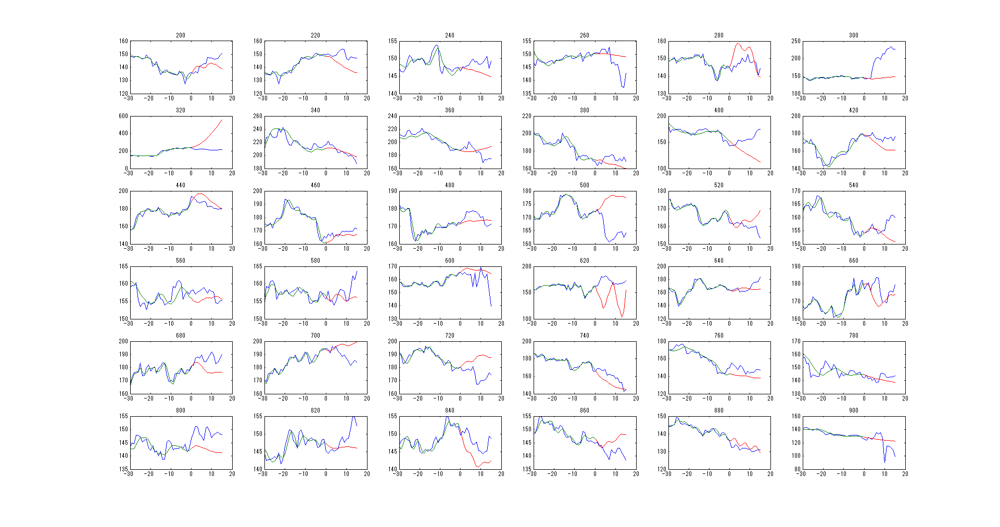

Contents
clear;
Data Source
We use 5-day Nikkei price with 1-minute tick They are simply joined to make a big date set for ease of test
load('nikkei_5d.mat');
ref_data = nikkei_5d;
Parameters
- nn: number of sample points, nn=180 means use 180-minute (3-hour) samples
- mm: window size of dependency, mm=60 means 60-minute correlation
- rr: number of engenvectors
% number of series nn = 80; % window size mm = 15; % number of eigenvalue rmax = 5; % predict series pp = mm;
Result
- blue: real history
- green: approximated history
- red: predicted trend
hfig=figure; set(gcf, 'Position', get(0, 'Screensize')); figcnt = 1; % check for different sample points for tt = 200:20:900 ll = nn - mm + 1; X = zeros(mm, ll); for i = 1:ll X(:,i) = ref_data(tt-nn+i:tt-nn+i+mm-1); end X = flipud(X); % row average Xm = sum(X, 2) ./ ll; Xhat = bsxfun(@minus, X, Xm); Y = Xhat * Xhat.'; [V,D] = eig(Y); D = diag(D); dd = D ./ max(D); rr = length(find(dd >= 0.02)); rr = min(rr, rmax); % take r-largest eigenvectors Vhat = zeros(mm, rr); Vhat = V(:,end-rr+1:end); Vhat = fliplr(Vhat); L = zeros(mm,1); L(1) = 1; Lt = L.'; Q = zeros(mm,1); VV = Vhat * Vhat.'; LVV = Lt * VV; LVVL = LVV * L; sol = ref_data; sol(tt+1:end) = 0; % begin prediction for i = 1:pp Q(2:end) = flipud(sol(tt-mm+1+i:tt-1+i)); % sol(tt+i) = LVV * Q / (1-LVVL); sol(tt+i) = (LVV * Q + Lt * Xm - LVV*Xm) / (1-LVVL); end % for i = 0:pp*2 xrec = VV * Xhat(:,end-i) + Xm; sol(tt-i) = xrec(1); end % figure subplot(6,6, figcnt); plot(-pp*2:pp, ref_data(tt-pp*2:tt+pp),'-', ... -pp*2:0, sol(tt-pp*2:tt),'-', ... 0:pp, sol(tt+0:tt+pp),'-'); title(int2str(tt)); figcnt = figcnt + 1; end figure(hfig);